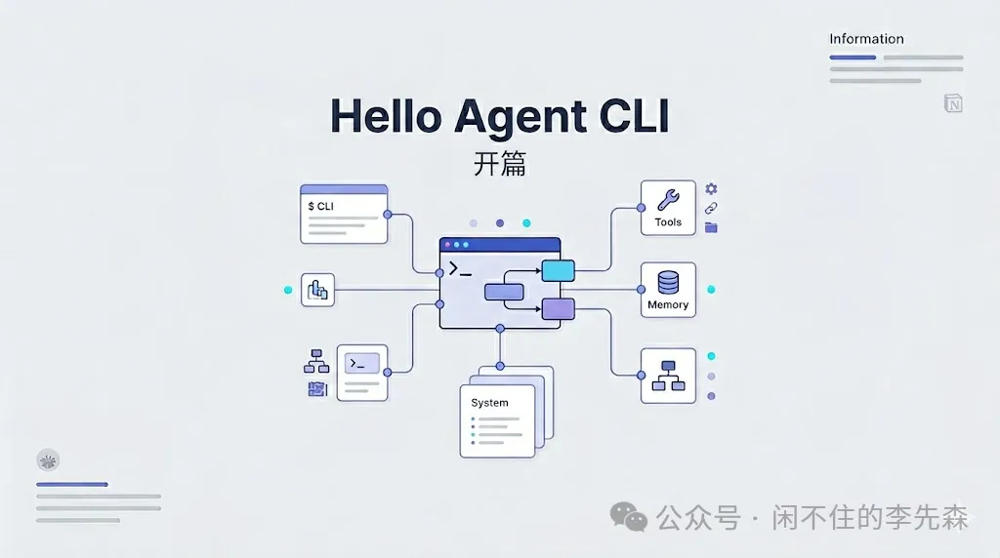

前段时间 Claude Code 泄露，大家都在讨论这个项目，我也很好奇这个项目是怎么实现的，于是就想做个系列教程，来记录自己实现 Agent CLI 工具的过程。
喜欢的话， 可以关注一下这个合集hello Agent CLI， 我会持续更新这个系列教程。
首先介绍一下这个教程的定位：
这个教程会基于 Claude Code 的源码，从零开始实现一个 Agent CLI 工具，并对比 Claude Code 的实现方式，帮助你理解 Agent CLI 工具的实现原理。
这个教程部分内容会通过 AI 生成， 但是大部分内容都是我在实际实现过程中总结出来的， AI 只是辅助我完成一些工作， 例如大纲的生成、 文章的思路生成等， 如果实在是介意有 AI 生成的部分， 现在你就可以关闭这个文章了。
完成这个系列教程，你将拥有一个叫做 myagent 的命令行工具：
# 场景一：非交互模式（适合脚本和 CI）
$ myagent "帮我给这个项目写单元测试"
◆ 分析项目结构...
✓ bash("find . -name '*.ts' | head -20") → 17 个文件
✓ read_file("src/utils/parser.ts") → 128 行
✓ bash("bun test") → 2 个失败
◆ 生成测试...
✓ write_file("src/utils/parser.test.ts") → 写入 89 行
✓ bash("bun test") → 12/12 通过
✦ 完成。共 5 次工具调用，耗时 38 秒，花费 $0.02
# 场景二：交互式 REPL（适合日常开发）
$ myagent
╭──────────────────────────────────────╮
│ myagent v1.0.0 gpt-4o │
│ /help /memory /plan /compact │
╰──────────────────────────────────────╯
> 帮我把 parseUser 函数重构，加上类型守卫
◆ 读取 src/auth/user.ts...
◆ 分析现有类型定义...
◆ 重构中... ████████████░░░░ 75%这个工具具备 Claude Code 约 80% 的核心能力，使用 TypeScript 实现。它不是一个演示项目，完成后你可以在真实项目中使用，也可以在此基础上构建自己的产品。
在做这个教程之前，我也在考虑理解 Agent CLI 工具的实现原理有什么用呢，对于使用 Agent CLI 工具的用户来说， 其实完全没有必要理解， 但现实是： 市面上目前大公司都在制作自己的 Agent CLI 工具， 阿里、腾讯、字节等都在制作自己的 Agent CLI 工具， 如果能够理解这些工具的实现原理， 至少能够美化一下自己的简历吧。
下面是 AI 提供的本教程的适用人群：
-
正在使用 Claude Code / Cursor，想理解这类工具底层是怎么造的
-
想自己做 AI 编码工具的技术创业者
-
企业内部需要定制开发工具、不方便依赖第三方产品的工程师
-
对 Agent 系统架构感兴趣，想通过亲手实现来学习
下面是 AI 提供的不适合本教程的人群：
-
只想开箱即用（直接装 Claude Code 就好：
npm i -g @anthropic-ai/claude-code） -
没有 TypeScript 基础（教程大量依赖 TS 类型系统）
-
只需要代码补全功能（这是一个 Agentic 工具，不是补全插件）
因为这篇教程是需要动手实现的，所以需要具备以下技术基础：
-
TypeScript：接口、泛型、
async/await、类型守卫 -
命令行：会用 bash/zsh，理解 stdin / stdout / stderr
-
基础 React 知识：
useState、useEffect（第三章开始用到）
这个教程有别于常见的"源码解读"类文章，我更偏向于把它做成一个动手教程，所以会有两条并行主线：
主线：从零开始动手实现 myagent每章写代码，每章末有可以直接运行的里程碑。从 50 行开始，逐步扩展到完整的 myagent。
副线：参考 Claude Code 的实现方式每章附 Claude Code 对应模块的分析， 毕竟 Claude Code 是 Anthropic 数百名工程师打磨的生产系统，经过数百万次真实使用的验证。每一个"看起来显然"的实现方式，Claude Code 都踩过坑，我们可以直接借鉴结论。
Claude Code 泄露源码仓库：claude-code
两条主线的分工：
|
|
主线
|
副线
|
|---|---|---|
| 视角 |
我们要怎么实现 xxx
|
Claude Code 是这样实现 xxx 的
|
| 目的 |
动手、理解、能用
|
借鉴生产经验，理解设计决策
|
| 产物 |
可运行的
myagent |
对工业级实现的判断力
|
这个教程不需要读懂 Claude Code 的每一行，也不会照抄， 我们只是参考泄露版的内部功能的实现原理，把它当参考答案，来实现自己的 myagent 工具。
每章的固定格式
从后面第一章开始，每章都遵循同一套结构：
- 本章要实现什么
一句话说明本章的产出是什么
- 最终结果
可以直接
bun run验证的命令 - 实现思路
核心思路和关键代码片段（主线）
- Claude Code 的实现方式
对应源码路径、行数、设计决策（副线）
- 代码仓库
本章的代码仓库地址，可以直接
git clone下来运行。 仓库地址： https://github.com/ricoNext/hello-agent-cli， 每章的代码按照分支存放在仓库中， 分支名称为chapter-xxx。
这个格式让每章都可以独立阅读——如果你只对某个功能感兴趣，跳过去直接看，不会迷失。
Claude Code 泄露版源码说明
Claude Code 泄露版源码对 Anthropic 开发者不小心泄露出来的 source map 文件进行逆向还原的产物， 我 fork 了这个代码仓库， 地址是： https://github.com/ricoNext/claude-code 。 后续项目中会多次提到 Claude 关于 XX 部分的实现方式， 大家可以参考这个代码仓库来理解。
为了更好的理解 Claude Code 的架构，可以先看一下 Claude Code 的整体架构：
┌─────────────────────────────────────────────────┐
│ 用户层（User Layer） │
│ 键盘输入 / 管道（-p）/ 脚本调用 │
└────────────────────┬────────────────────────────┘
│
┌────────────────────▼────────────────────────────┐
│ 交互层（UI Layer） │
│ src/screens/REPL.tsx src/main.tsx │
│ React Ink 终端渲染 Commander.js CLI │
└────────────────────┬────────────────────────────┘
│
┌────────────────────▼────────────────────────────┐
│ 引擎层（Engine Layer） │
│ src/QueryEngine.ts ←→ src/query.ts │
│ 会话管理/状态机 Agentic Loop 核心 │
└────────────────────┬────────────────────────────┘
│
┌────────────────────▼────────────────────────────┐
│ 基础设施层（Infrastructure Layer） │
│ claude.ts（API） tools/（工具） mcp/（协议） │
│ context.ts（上下文） memdir/（记忆） │
└─────────────────────────────────────────────────┘
总结起来就是： 用户输入 -> 交互层 -> 引擎层 -> 基础设施层。
一次完整的用户交互经历以下路径：
用户按下 Enter
│
▼
REPL.tsx 捕获输入
│ 调用 QueryEngine.runQuery()
▼
QueryEngine.ts
├─ 从 memdir/ 加载记忆
├─ 调用 context.ts 构建上下文
│ ├─ getGitStatus() → git status/log（并行执行）
│ └─ getUserContext() → CLAUDE.md + 当前日期
└─ 调用 query()
│
▼
query.ts（Agentic Loop）
├─ 构建消息列表（含 system prompt）
├─ 调用 claude.ts → Anthropic API（SSE 流式）
├─ 解析 stream events
│ ├─ text_delta → 流式渲染到 REPL
│ └─ tool_use → 提取工具调用
└─ 如有工具调用：
├─ 权限检查（hooks/toolPermission/）
├─ 用户确认（Manual/Auto 模式）
├─ 工具执行（tools/<ToolName>/）
└─ 结果注入 → 回到 Agentic Loop 顶部
这个循环会持续运行，直到模型输出结束（没有工具调用）或用户中断。
上面就是 Agent CLI 工具的核心流程， 后面的文章会围绕这个流程进行讲解。 这里就不再赘述了。后续会详细的讲解每一部分的实现方式。
教程结构大纲参考
大纲是 AI 生成的， 仅供参考，后续可能会根据实际情况进行调整， 但是大的框架不会改变， 另外会有一个专门的章节用于存放一些新的知识点或者新的实现方式。
第 0 章：开篇（本章）
第一部分：核心骨架
第 1 章：50 行的最小 Agent
第 2 章：高性能 CLI 入口
第 3 章：流式输出与交互式 REPL
第 4 章：Agentic Loop（工具调用循环）
第 5 章：上下文构建（Git 状态、myagent.md）
→ 里程碑：一个支持流式对话、能调用工具的基础 Agent
第二部分：工具系统
第 6 章：工具框架（接口、注册表、执行器）
第 7 章：文件操作工具
第 8 章：Shell 执行与代码搜索
第 9 章：网络与交互工具
第 10 章：生产力工具（TodoWrite / PlanMode）
第 11 章：子代理系统
第 12 章：MCP 协议接入
→ 里程碑：具备 30+ 工具，能完成真实编码任务
第三部分：高级特性
第 13 章：记忆系统
第 14 章：权限系统
第 15 章：安全沙箱
第 16 章：上下文压缩
第 17 章：Hook 系统
→ 里程碑：生产可用，有安全保障，能处理长任务
第四部分：工程化
第 18 章：测试策略
第 19 章：监控与可观测性
第 20 章：配置管理
第 21 章：打包与分发
→ 里程碑：可以 npm 发布，可以给团队使用
第五部分：扩展生态
第 22 章：Skills 与插件系统
第 23 章：子代理编排
第 24 章：多云 API 支持
→ 里程碑：完整生态，支持 Bedrock / Vertex / Azure
第六部分：综合实战
第 25 章：从零到生产——完整项目复盘
第七部分：补充
下一章预告
进入写代码环节。我们用 50 行实现一个真正能跑的最小 Agent——接受输入、调用 LLM、打印回复，同时完成整个项目的环境初始化和目录创建。
# 第一章结束时，你可以这样运行它：
echo "用一句话解释闭包" | bun run src/index.ts -p
# 闭包是函数访问其定义时词法作用域中变量的能力。